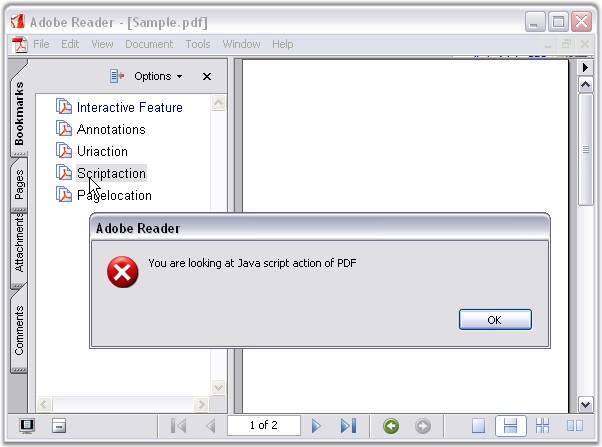

While loading an existing document, the library loads all bookmarks of the document. Each loaded bookmark is represented by the PdfLoadedBookmark class, inherited from the PdfBookmark class. You can access the root collection of document bookmarks by using the Bookmark property of the PdfLoadedDocument class. This collection is represented by the PdfBookmarkBase class.
The following code example illustrates how to access a loaded bookmark.
|
[C#]
const string filename = "..."; PdfLoadedDocument ldDoc = new PdfLoadedDocument(filename);
PdfBookmarkBase rootCollection = ldDoc.Bookmarks;
PdfLoadedBookmark bookmark = rootCollection[0] as PdfLoadedBookmark;
ldDoc.Save(newFileName); ldDoc.Close(); |
|
[VB.NET]
const string filename = "..."; PdfLoadedDocument ldDoc = new PdfLoadedDocument(filename);
PdfBookmarkBase rootCollection = ldDoc.Bookmarks;
PdfLoadedBookmark bookmark = rootCollection[ 0 ] as PdfLoadedBookmark;
ldDoc.Save( newFileName ); ldDoc.Close(); |
Bookmark Manipulation
The following manipulations can be made to the bookmarks:
· Modifying bookmarks
· Adding Actions to the bookmark
1. Modifying bookmarks
Bookmarks can be modified in the following ways:
· Change the bookmark style, color, title and destination
· Add or insert new bookmarks into the root collection
· Add or insert new bookmarks as a child of another bookmark
· Assign the destination of the added bookmarks to a loaded page or a new page of the document
The following code example illustrates how to modify the bookmark style and destination.
|
[C#]
const string filename = "..."; PdfLoadedDocument ldDoc = new PdfLoadedDocument(filename); bookmarPdfLoadedPage ldPage = loadedDoc.Pages[1] as PdfLoadedPage;
PdfBookmarkBase rootCollection = ldDoc.Bookmarks;
PdfLoadedBookmark bookmark = rootCollection[0] as PdfLoadedBookmark; bookmark.Destination = new PdfDestination(ldPage); bookmark.Color = Color.Green; bookmark.TextStyle = PdfTextStyle.Bold; bookmark.Title = "Changed title";
ldDoc.Save(newFileName); ldDoc.Close(); |
|
[VB.NET]
Const filename As String = "..." Dim ldDoc As New PdfLoadedDocument(filename) Dim ldPage As bookmarPdfLoadedPage = TryCast(loadedDoc.Pages(1), PdfLoadedPage)
Dim rootCollection As PdfBookmarkBase = ldDoc.Bookmarks
Dim bookmark As PdfLoadedBookmark = TryCast(rootCollection(0), PdfLoadedBookmark) bookmark.Destination = New PdfDestination(ldPage) bookmark.Color = Color.Green bookmark.TextStyle = PdfTextStyle.Bold bookmark.Title = "Changed title"
Const newFileName As String = "..." ldDoc.Save(newFileName) ldDoc.Close() |
2. Adding Actions to Bookmark
You can perform actions by clicking the bookmarks at run time. To add custom actions to the bookmarks use the following classes.
|
Class Name |
Description |
|
PdfLaunchAction |
Launches an application, opens or prints a document. |
|
PdfUriAction |
Acts as a unique resource identifier. |
|
PdfJavaScriptAction |
Performs a javascript action in the PDF document. |
|
PdfDestination |
Represents an anchor in the document where bookmarks and annotations can direct when clicked. |
|
PdfGoToAction |
This action goes to a destination in the current document. |
|
[C#]
//Create new Bookmark PdfBookmark bookmarkaction = doc.Bookmarks.Add("Annotations");
PdfLaunchAction action = new PdfLaunchAction(@"..\..\Data\Book.txt");
//launch file when we click the Bookmark bookmarkaction.Action = action;
PdfBookmark bookmarkaction1 = doc.Bookmarks.Add("Uriaction");
//Create uri action PdfUriAction uriAction = new PdfUriAction("http://www.google.com");
//Set uri action. Clicking the bookmark will move to the corresponding uri bookmarkaction1.Action = uriAction;
PdfBookmark bookmarkaction2 = doc.Bookmarks.Add("Scriptaction");
//Create Java action PdfJavaScriptAction javaAction = new PdfJavaScriptAction("app.alert(\"You are looking at Java script action of PDF \")"); bookmarkaction2.Action = javaAction;
PdfBookmark bookmarkaction3 = doc.Bookmarks.Add("Pagelocation"); PdfDestination dest = new PdfDestination(doc.Pages[1], new Point(0, 100)); PdfGoToAction goToAction = new PdfGoToAction(doc.Pages[1]); goToAction.Destination = dest;
// Will move to a particular location of this page bookmarkaction3.Action = goToAction; |
|
[VB.NET]
'Create new Bookmark Dim bookmarkaction As PdfBookmark = doc.Bookmarks.Add("Annotations")
Dim action As New PdfLaunchAction("..\..\Data\Book.txt")
'launch file when we click the Bookmark bookmarkaction.Action = action
Dim bookmarkaction1 As PdfBookmark = doc.Bookmarks.Add("Uriaction")
'Create url action Dim uriAction As New PdfUriAction("http://www.google.com")
'Set uri action. Clicking the bookmark will move to the corresponding uri bookmarkaction1.Action = uriAction
Dim bookmarkaction2 As PdfBookmark = doc.Bookmarks.Add("Scriptaction")
'Create Java action Dim javaAction As New PdfJavaScriptAction("app.alert(""You are looking at Java script action of PDF "")") bookmarkaction2.Action = javaAction
Dim bookmarkaction3 As PdfBookmark = doc.Bookmarks.Add("Pagelocation") Dim dest As New PdfDestination(doc.Pages(1), New Point(0, 100)) Dim goToAction As New PdfGoToAction(doc.Pages(1)) goToAction.Destination = dest
' Will move to this page particular location bookmarkaction3.Action = goToAction |

Figure 56: JavaScript alert message displayed using bookmark action